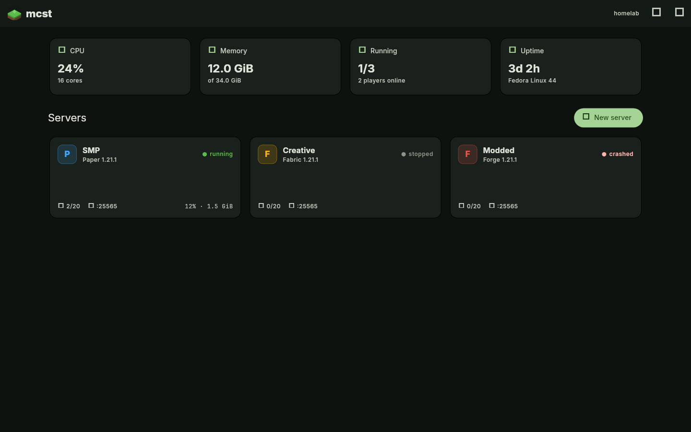
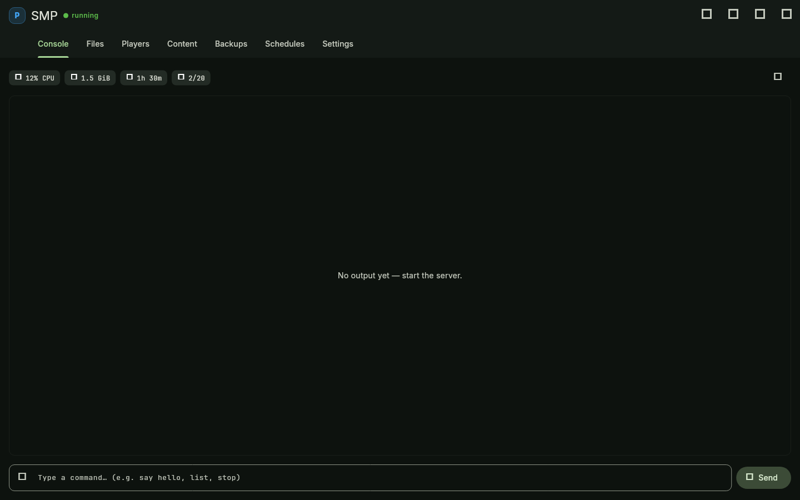
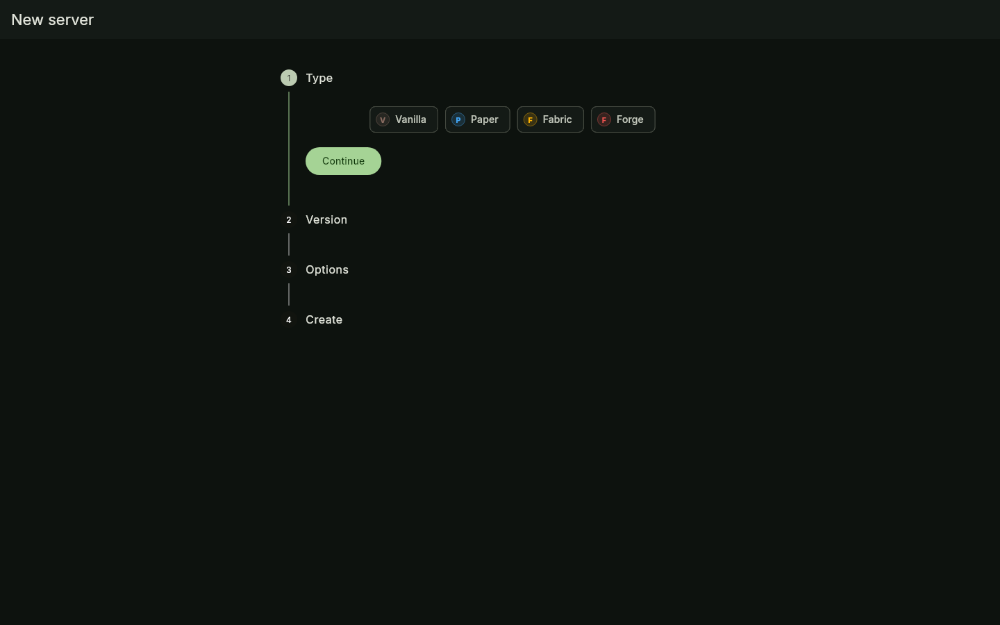
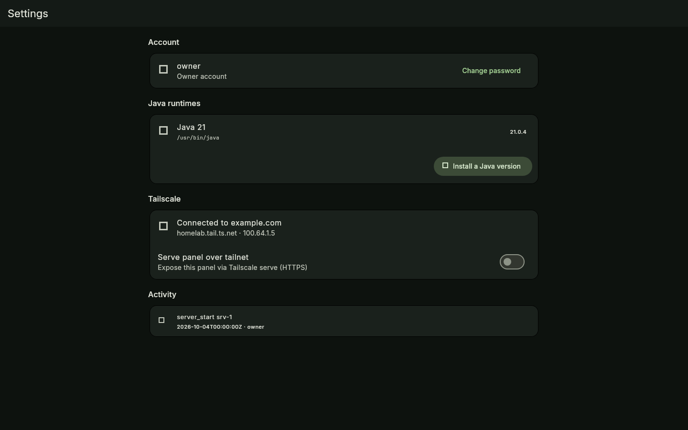
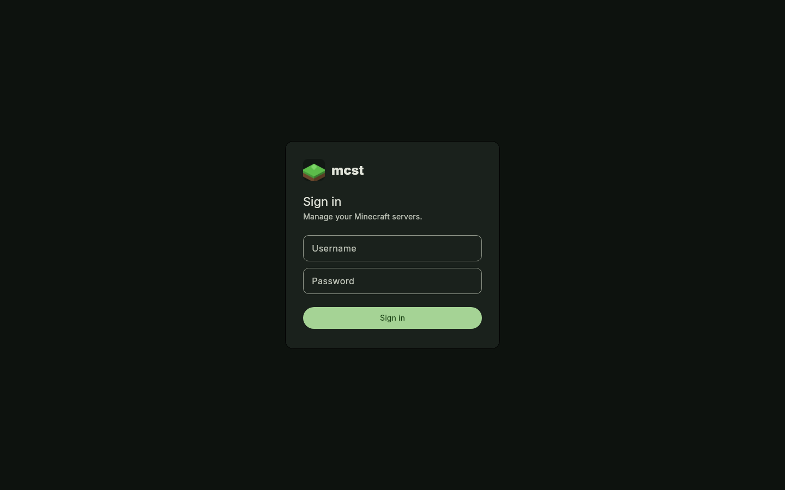

mcst is a self-hosted panel for creating and managing Paper, Fabric, Forge and Vanilla servers — live console, backups, schedules, Modrinth browser and Tailscale networking. No dependencies, no env files.

Built from real admin pain points — not a toy.
Paper, Fabric, Forge, NeoForge and Vanilla. Picks the right Java version automatically and downloads runtimes for you.
Real-time logs over WebSocket, command history, and player join/leave tracking — all in the browser.
Per-server CPU, memory, uptime and player counts, plus host stats on the dashboard.
One-click restores, and cron-like schedules: restart nightly, back up hourly, run any command.
Search and install mods, plugins and datapacks straight into each server — no FTP, no dragging jars.
Browse, edit, upload and download files. Raw server.properties
editor included.
Serve the panel over your tailnet and expose game servers to friends without port forwarding.
Auto-restart on crash, stop timeouts, graceful-kill escalation and an audit log of every action.
Create the owner account in the browser on first launch. Argon2id hashing, session cookies, done.
One file. One command.
# download the release for your platform, then ./mcst # → http://localhost:25580 — create your account on first run # custom port ./mcst -p 8080
Or with Docker:
# docker compose up -d — or plain: docker run -d --name mcst -p 127.0.0.1:25580:25580 -v mcst-data:/home/mcst/data mcst # publish game ports too, e.g. -p 25565:25565
New server, pick Paper / Fabric / Forge / Vanilla and a version.


